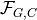
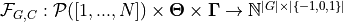
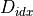
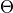
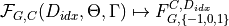
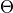
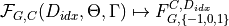
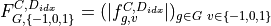
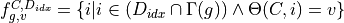

validating_models.frequency_distribution_table module#
- class validating_models.frequency_distribution_table.FrequencyDistributionTable(checker: validating_models.checker.Checker, constraints: List[validating_models.constraint.Constraint], indices: List[int], group_functions: List[function], all_indices_groups=None, coverage=False, non_applicable_counts=False, **args)[source]#
Bases:
objectFrequency distribution tables are used to summarize constraint validation results and visualize them accordingly.
A table shows the different measurement categories and the number of observations per category. The measurement categories are constraints, the possible validation results and different groupings. The columns always have multiple hierachies, the first one refers to the different constraints and the second one to the different validation results (valid, invalid and not applicable). The index represents the division of the instances counted into the groups, when multiple group functions are given.
Abstract definition of the function  used to create the frequency distribution table (without the coverage option): The function , where
 a set of arbitrary group identifiers
a set of arbitrary group identifiers a constraint
a constraint the number of samples in the given dataset
the number of samples in the given datasetis the endless space of grouping function
![\Gamma: G \to \mathcal{P}([1,...,N])](_images/math/5a2fd372adc3ba17adc53db8c9e353bcc3d4ecdd.png)
maps a subset of the indices  of a dataset
 , a model validation result function  and a grouping function to a frequency distribution table.

where
, a model validation result function  and a grouping function to a frequency distribution table.

where

- Parameters
checker (validating_models.checker.Checker) – The checker instance to be used to get the constraint validation results.
constraints (list of validating_models.constraint.Constraint) – The constraints to be checked.
indices (list of int, optional) – A list of indices referring to samples in the dataset, which should be used while creating the frequency distribution table.
group_functions (list of group function (see validating_models.groupings)) – The list of group functions defining the groups based on the checker and the given indices.
coverage (bool) – Whether to use “Coverage” to only count the most important validation results. That is given that the grouping is non overlapping the entries of the frequency distribution table will sum to the number of indices given.
non_applicable_counts (bool) – Whether to use non applicable counts. The semantics depends on the type of the constraint.
- property constraints_descriptor#
- property constraint_names#
- property categories_descriptor#
- property category_names#
- get_validation_result_summary(level, number_of_samples=True, percentage_per_validation_result=True)[source]#
- visualize(title='', selected_groups=None, level_to_visualize=0, aggregation_methode='sum()', scale=1.0, summary=False, additional_text='', figure_size=None, type=None, fontname='DejaVu Sans', fontsize=9, ax=None)[source]#
Automated visualiztion of the frequency distribution table for one grouping.
- Parameters
title (str) – The title to use for the visualization.
selected_groups (label, slice, list, mask or a sequence of such) – A selection of groups to be used. See pandas.MultiIndex.get_locs for examples.
level_to_visualize (int) – The level (group) to be visualized. A pandas groupby is performed on the given level.
aggregation_methode (string) – If there are multiple groupings the rest has to be aggregated.
scale (float) – Scales the visualization accordingly, however it’s recommended to scale the visualiation while saving to file.
summary (bool) – Ignored (to be implemented in the feature)
additional_text (str) – Ignored (to be implemented in the feature)
figure_size ((int, int), optional) – The size of the visualisation to be created. Normally the figure size can be determined automatically, use in case it fails.
type (A type, optional) – Force a specific type of visualization: Can be one of GroupedStackedHistogram, StackedHistogram or PieChart. See validating_models.drawing_utils.
fontname (str, optional) – The font to be used
fontsize (int, optional) – The size of the font to be used
ax (matplotlib.axis, optional) – The axis to draw the visualization on.